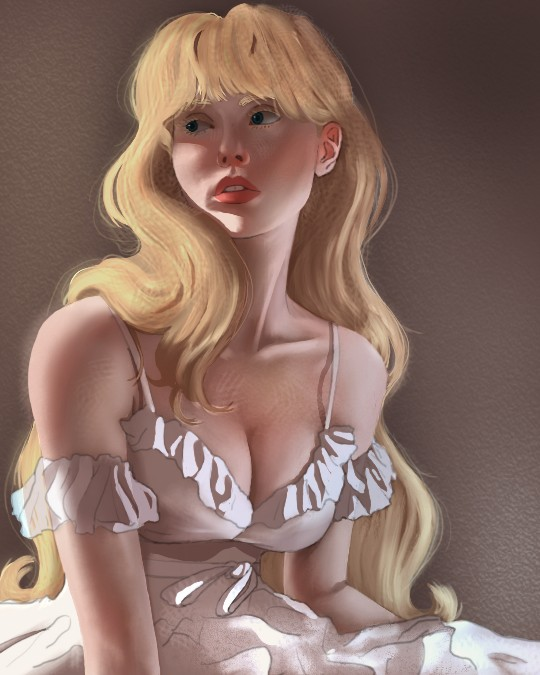
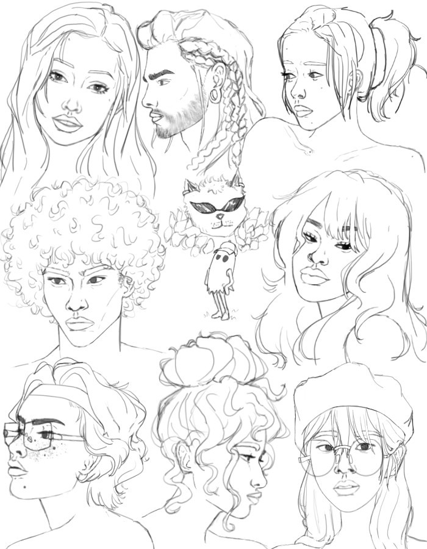
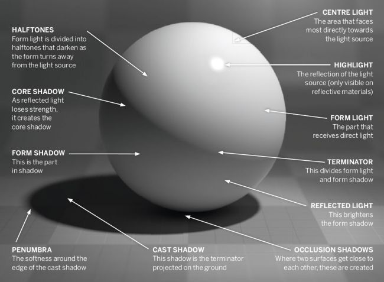
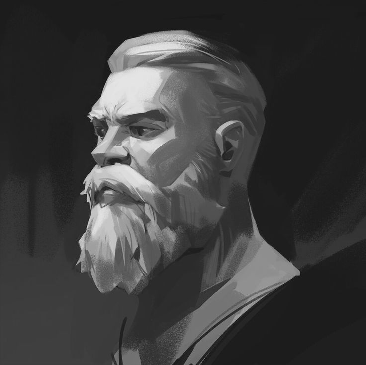
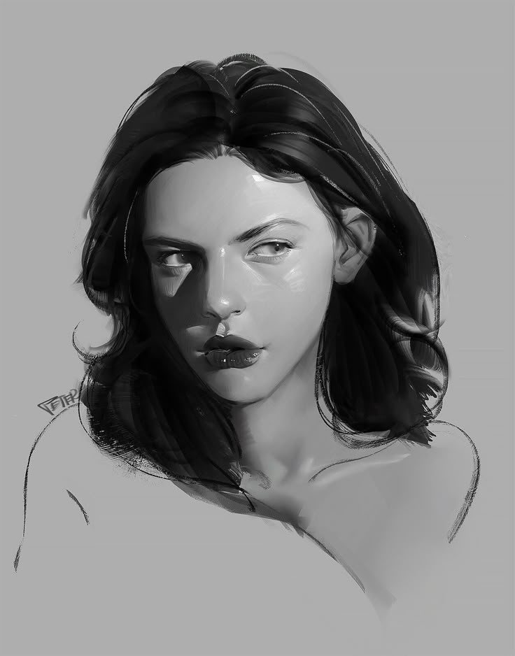
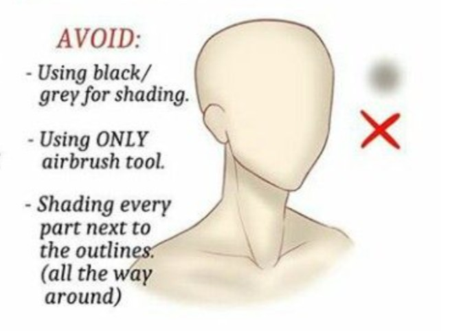

Some of my works:


Shading! The Greatest Ally and Enemy Wrapped Up in One 🎨
Shading in digital art can make or break your piece—it’s what gives your work depth, emotion, and a sense of realism. But let’s be honest: it’s also one of the trickiest things to master. Whether you’re battling muddy shadows or overblown highlights, we’ve all been there. In this section, I’ll share my own basic shading tips.
- Using a reference – it’s not cheating! You're learning and storing into your memory bank for later and that’s okay! Pinterest is a great reference search engine!
-
Starting from grayscale – this makes it easier to create the different values without getting caught up in the colors.
   -
Put down the airbrush! – Shadows/lights are not always soft; without the hard lines your picture can become flat. PS. shading with black or gray is ok in grayscale but not on actual colors- it looks muddy!
 -
Play with the layer modes! – When transitioning from grayscale to color, different modes can create different color effects on your drawing.
🎨 What's Your Art Style?
Everyone’s got a vibe! Pick the one that fits you best and see what it says about your creative energy.